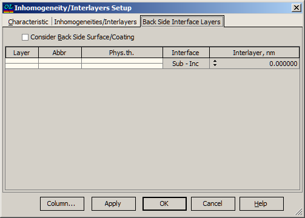
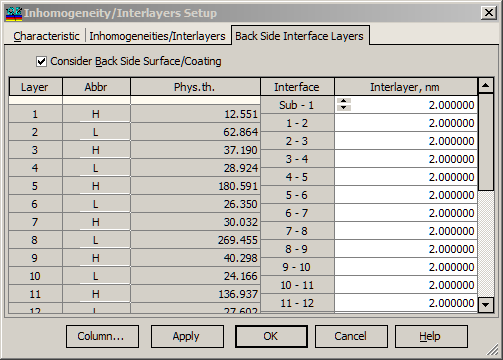

Back Side Interlayers
Back Side Interlayers
Navigation: OptiLayer Menu Commands > Analysis Menu > Inhomogeneities/Interlayers >
Back Side Interlayers
` <inhomogeneity_interlayers.html>`__ ` <inhomogeneities_interlayers.html>`__ ` <inhomogeneities_interlayers_ev.html>`__
The Back Side Interface Layers page of the Inhomogeneity/Interlayers Setup window allows setting the interface layer thickness for the substrate back side and starting the Inhomogeneities/Interlayers Analysis. If a coating is present on the back side of the substrate, then all layer interfaces of this coating are available for setting interface layers.

To activate computations with Back Side Surface/Coating effect, check the corresponding checkbox.
Below this dialog, the loaded back side coating is shown.

The Column… button allows access to the Column Editor which can be used for sophisticated editing of values in columns. The OK button accepts specified values and starts the Inhomogeneities/Interlayers Analysis procedure. Its results are displayed in the Inhomogeneities/Interlayers Evaluation window. The Apply button performs the same operation but without closing the Inhomogeneity/Interlayers Setup window.
See also: